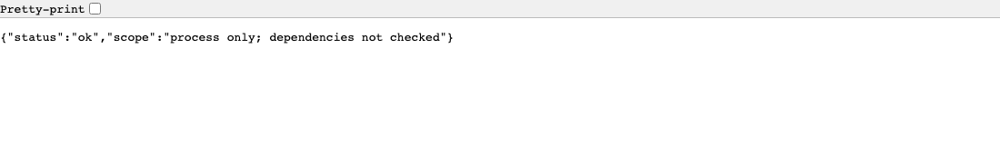
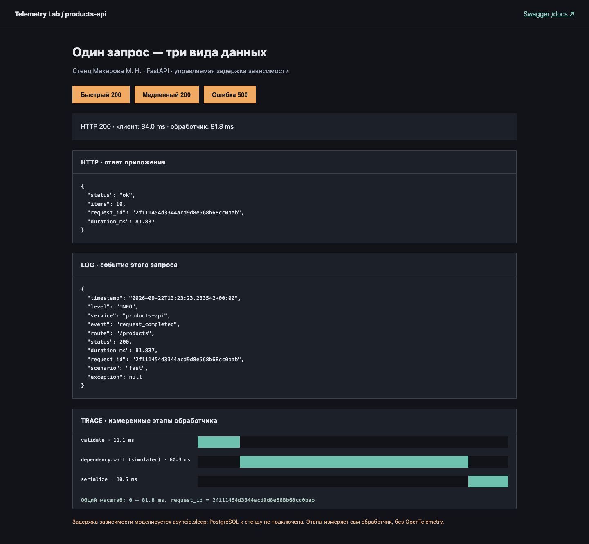
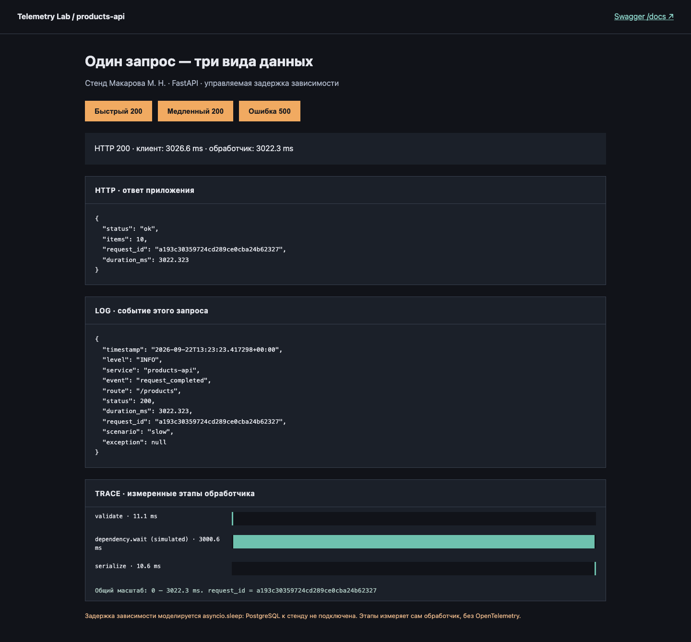

Развёртываниеdeployment
Установка и запуск версии программы там, где с ней работают пользователи — в рабочей среде.
Примервыпуск новой версии products-api на серверы.
Гделекция 1.1, §3
Метрики и наблюдаемость · часть 1 · основы наблюдаемости
Лекция 1.1
Пока программа запущена на своём компьютере, ошибку видно сразу. После развёртывания разработчика рядом нет, и о сбое можно узнать только из данных, которые сервис сохранил заранее. В лекции — какие это данные и почему код ответа, проверка /health и ручная проверка их не заменяют.
products-api на FastAPIЛекция откроется по одному разделу: на экране одна мысль, кнопка «Дальше» ведёт к следующей. Стрелки ← → на клавиатуре тоже листают, Esc возвращает всю лекцию.
На каком сервисе построена часть 1 и как он себя ведёт.
Все лекции первой части опираются на один небольшой сервис — products-api. Это веб-приложение на FastAPI: на запрос GET /products оно отвечает списком товаров. Настоящего каталога за ним нет, сервис возвращает число товаров и служебные поля.
Настоящие сервисы тормозят и падают в случайные моменты, и повторить такой сбой по заказу почти невозможно. Поэтому поведение стенда задаёт параметр запроса scenario. Посмотрим, как он устроен в коде:
await stage("validate", 0.01) try: await stage("dependency.wait (simulated)", 3.0 if scenario == "slow" else 0.06) if scenario == "error": raise TimeoutError("Simulated dependency timeout; no database is connected") await stage("serialize", 0.01) except TimeoutError: status = 500
stage(name, seconds)Один этап обработки: обработчик ждёт заданное время и записывает, сколько ожидание заняло на самом деле.dependency.wait (simulated)Ожидание зависимости. При scenario=slow оно длится 3 секунды, в остальных случаях — 0,06 секунды.raise TimeoutError(...)При scenario=error ожидание заканчивается исключением, и клиент получает код 500.asyncio.sleep. Поэтому каждый сценарий повторяется одинаково.Отправим по одному запросу каждого сценария и посмотрим код ответа и время:
for sc in fast slow error; do
curl -s -o /dev/null -w "$sc %{http_code} %{time_total}s\n" "localhost:8015/products?scenario=$sc"
done
fast 200 0.084417s slow 200 3.022478s error 500 0.074278s
Три сценария на одной шкале времени:
Быстрый запрос почти не виден на шкале: 84 мс против трёх секунд медленного. Запрос с ошибкой тоже короткий, но заканчивается кодом 500. Запомним это сочетание: быстрый 200, медленный 200 и быстрая ошибка — дальше в лекции на нём видно, что сообщает код ответа и чего он не сообщает.
Прогон на живых данных. Отправим по запросу каждого сценария и посмотрим, что функция stage записала для каждого из них. Записи лежат в /events:
for sc in fast slow error; do curl -s -o /dev/null "localhost:8015/products?scenario=$sc"; done
curl -s localhost:8015/events | python3 -c "
import json, sys
for e in json.load(sys.stdin)['events']:
print(e['scenario'], e['status'], e['duration_ms'])
for s in e['spans']: print(' ', s)"
fast 200 82.114
{'name': 'validate', 'offset_ms': 0.001, 'duration_ms': 11.05}
{'name': 'dependency.wait (simulated)', 'offset_ms': 11.058, 'duration_ms': 60.563}
{'name': 'serialize', 'offset_ms': 71.629, 'duration_ms': 10.482}
slow 200 3022.943
{'name': 'validate', 'offset_ms': 0.001, 'duration_ms': 10.867}
{'name': 'dependency.wait (simulated)', 'offset_ms': 10.87, 'duration_ms': 3001.751}
{'name': 'serialize', 'offset_ms': 3012.632, 'duration_ms': 10.306}
error 500 72.665
{'name': 'validate', 'offset_ms': 0.002, 'duration_ms': 11.057}
{'name': 'dependency.wait (simulated)', 'offset_ms': 11.062, 'duration_ms': 60.499}| Строка | Что получилось на прогоне |
|---|---|
stage("validate", 0.01) | во всех трёх запросах — около 11 мс |
stage("dependency.wait …", 3.0 if slow else 0.06) | fast и error — около 60 мс, slow — 3001,8 мс |
raise TimeoutError(...) | у error этапа serialize нет: исключение прервало обработчик, код 500 |
stage("serialize", 0.01) | у fast и slow — около 10 мс |
Каждая строка кода оставила след в записи: этап, его начало и длительность. Медленный запрос отличается только вторым этапом, а запрос с ошибкой — тем, что третьего этапа нет.
Кроме /products, у сервиса есть служебные адреса:
| Адрес | Что возвращает |
|---|---|
/lab | страница стенда: кнопки сценариев, ответ, запись о событии и этапы обработки |
/health | короткий ответ о том, что процесс работает |
/events | последние 2000 записей о запросах, которые процесс хранит в памяти |
/metrics | счётчики и гистограмма в текстовом формате Prometheus |
/docs | документация Swagger, которую FastAPI строит по коду |
Код стенда и инструкция по запуску — в архиве telemetry-lab.zip. Запускать его для чтения лекции не обязательно: весь вывод и кадры в тексте сняты на этом сервисе.
Сервис описан. Вспомним, как ошибки в нём ищут, пока он запущен на своём компьютере.
Как ищут ошибку, пока программа запущена рядом.
Пока программа запущена локально, разработчик отправляет запрос и сразу видит результат. У него четыре способа найти ошибку:
Терминал показывает каждый запрос и полный traceback при исключении. Отладчик останавливает выполнение и показывает значения переменных. Запрос можно повторить и сравнить результат. В код можно добавить print, перезапустить сервер и сразу увидеть вывод. Вот что вывел в терминал Uvicorn — сервер, на котором работает FastAPI, — после трёх запросов из §1:
INFO: 127.0.0.1:49322 - "GET /products?scenario=fast HTTP/1.1" 200 OK
INFO: 127.0.0.1:49324 - "GET /products?scenario=slow HTTP/1.1" 200 OK
dependency_timeout request_id=9f261e9e4559432396dabd1eab6a474c
Traceback (most recent call last):
File ".../lab/app.py", line 55, in products
raise TimeoutError("Simulated dependency timeout; no database is connected")
TimeoutError: Simulated dependency timeout; no database is connected
INFO: 127.0.0.1:49328 - "GET /products?scenario=error HTTP/1.1" 500 Internal Server Error
Ошибка видна сразу: traceback называет файл, строку 55 и текст исключения. А первые две строки одинаковые: 200 OK. Медленный запрос шёл три секунды, но в строке Uvicorn длительности нет. Локально это не мешает: разработчик сам ждал три секунды и заметил задержку.
Все четыре способа работают, пока разработчик находится рядом с процессом в момент ошибки: видит терминал, может остановить программу и повторить действие.
После развёртывания это условие перестаёт выполняться. Посмотрим, что меняется.
Через что проходит запрос, когда программа работает на сервере.
Пока машина стоит в мастерской, мастер слышит двигатель, может заглушить его и завести снова. Когда машина уехала к владельцу, мастеру остаются только записи бортового компьютера. С программой так же: после развёртывания разработчик больше не сидит рядом с процессом.
Сравним путь запроса в двух случаях. Сначала — на своём компьютере, затем — на сервере:
На сервере тот же код работает иначе:
На сервере приложение запущено в нескольких экземплярах — отдельных процессах одной программы. Их делают несколько, чтобы выдерживать нагрузку и не останавливать сервис, если упадёт один процесс. Запросы между экземплярами распределяет балансировщик нагрузки. Часть работы идёт вне HTTP-запроса: обработчики очереди формируют отчёты и отправляют письма уже после того, как пользователь получил ответ.
В таком окружении каждый из четырёх способов отладки перестаёт работать:
| Способ | Локально | На сервере |
|---|---|---|
| Терминал | виден сразу | вывод десятков процессов на разных серверах; после перезапуска контейнера может исчезнуть |
| Отладчик | программу можно остановить | остановка процесса остановит обслуживание пользователей |
| Повтор запроса | отправили ещё раз | неизвестно, какой запрос, от кого и на какой экземпляр пришёл |
print | добавили и перезапустили | нужен выпуск новой версии, а сбой к тому времени может пройти |
Самое неприятное начинается, когда сбой случается без свидетелей. Разберём один такой случай по шагам.
Почему после сбоя разбирать его уже не по чему.
Разберём типичный случай. Ночью на одном экземпляре кончилась память, процесс упал, а система оркестрации — программа, которая следит за процессами и перезапускает упавшие, — запустила его заново. Утром приходит жалоба. Проследим, где в это время были сведения о сбое:
Процесс упал, и его память освободилась вместе со всем, что в ней было.
Сервис снова работает, и до утра никто ничего не замечает.
На первом рисунке сведения о сбое ещё есть — в памяти экземпляра 2. На втором этот процесс исчез, и в памяти нового процесса сведений о сбое нет. На третьем разработчик смотрит на работающий сервис, но спрашивать не у кого. Вопрос «что случилось в 03:10» превращается в вопрос «какие данные о 03:10 сервис куда-то сохранил». Если не сохранил ничего, сбой не разобрать.
Данные для разбора сбоя собирают заранее, пока сервис работает, и хранят вне процесса, который может упасть.
Чтобы решить, какие данные собирать, нужно сначала определить, что значит «сервис работает хорошо».
Четыре свойства хорошей работы сервиса.
Для пользователя хорошая работа сервиса складывается из четырёх свойств. Они пересекаются, но проверяются по-разному:
| Свойство | Вопрос | Пример нарушения |
|---|---|---|
| Доступность | можно ли получить ответ | сервис не отвечает или возвращает 503 Service Unavailable |
| Производительность | сколько времени занимает работа | каталог открывается за 3 секунды вместо 100 мс |
| Надёжность | сохраняется ли поведение во времени | раз в несколько часов теряются фоновые задания |
| Корректность | правилен ли результат | пришёл HTTP 200, но заказ не записан в базу |
Доступность и производительность связаны. Браузер и мобильное приложение ждут ответа не бесконечно: у клиента есть предел, тайм-аут. Если ответ не пришёл за это время, клиент прерывает запрос с ошибкой. На рисунке — два запроса и тайм-аут клиента 30 секунд:
Первый запрос уложился в предел, пользователь получил ответ. Второй сервер обрабатывал 40 секунд, но клиент прервал ожидание на 30-й секунде. Сервер продолжал работать, а пользователь увидел ошибку. Для него медленный сервис стал недоступным.
Корректность проверяют отдельно. Код HTTP сообщает результат на уровне протокола: запрос принят и обработан без исключения. Смысла операции в нём нет. Обработчик оформления заказа может вернуть 200 и не записать заказ, и ни один показатель HTTP этого не заметит. Поэтому для операций с заказами и деньгами успех проверяют отдельно: заказ появился в базе, письмо ушло, платёж подтверждён.
Первое свойство, доступность, обычно проверяют отдельным адресом. Посмотрим, что эта проверка сообщает.
Что сообщает проверка состояния и что она не проверяет.
Почти у каждого веб-сервиса есть адрес проверки состояния. Балансировщик и система оркестрации регулярно обращаются к нему и по ответу решают, отправлять ли на экземпляр запросы и не пора ли его перезапустить. У стенда это /health. Откроем его в браузере:

/health в браузере Chrome.Браузер показал JSON одной строкой. Флажок Pretty-print добавил сам браузер, к ответу он не относится. Значение "status": "ok" означает, что обработчик выполнился. Поле scope сервис заполнил сам и назвал в нём границу проверки: проверен процесс, зависимости не проверялись. Код обработчика это подтверждает:
@app.get("/health", tags=["Проверка процесса"]) async def health(): return {"status": "ok", "scope": "process only; dependencies not checked"}
Обработчик не обращается к зависимостям и не выполняет код /products. На схеме — какую часть сервиса проходит каждый из двух запросов:
/health заканчивается внутри процесса, /products доходит до зависимости.Верхний запрос заканчивается внутри процесса: обработчик сразу возвращает ok. Нижний доходит до зависимости — там /products медлит или падает. Поэтому /health ответит ok, даже если /products в этот момент падает в каждом запросе.
Проверка состояния отвечает на вопрос «жив ли процесс» — этого достаточно, чтобы перезапустить зависший экземпляр. На вопрос «получают ли пользователи товары» она не отвечает: для него нужны данные о настоящих запросах.
Код ответа самого маршрута /products тоже сообщает не всё. Это видно на двух запросах с одинаковым кодом.
Почему успешный код ответа ничего не говорит о скорости.
Страница стенда /lab отправляет настоящий запрос к /products и показывает всё, что сервис сохранил о нём. Сначала нажмём «Быстрый 200»:

fast на странице стенда.Кадр читается сверху вниз. Строка итога: HTTP 200 · клиент: 84.0 ms · обработчик: 81.8 ms. Время клиента измерил браузер — от отправки запроса до ответа. Время обработчика измерил сам сервис — от начала до конца функции. Ниже три блока:
HTTPтело ответа, которое получил клиент: status, items, request_id — уникальный номер запроса, duration_ms — время обработчика.LOGзапись о событии, которую сервис сохранил у себя: время, уровень INFO, маршрут, код, сценарий. request_id совпадает с блоком HTTP.TRACEтри этапа обработчика на общей шкале: validate 11,1 мс, dependency.wait 60,3 мс, serialize 10,5 мс.Теперь нажмём «Медленный 200»:

slow: тот же код ответа и то же тело.В строке итога снова HTTP 200, но клиент ждал 3026,6 мс. В блоке HTTP те же status: "ok" и items: 10. В блоке LOG уровень INFO, как у быстрого запроса. Разница только в числах. На схеме — оба запроса на одной шкале:
Быстрый запрос — тонкая полоска у левого края. Медленный занимает всю шкалу, и почти всё его время — оранжевый этап ожидания зависимости. Этапы validate и serialize остались по 11 мс и превратились в тонкие черты по краям. Пользователь во втором случае ждал в 36 раз дольше, а код ответа и уровень записи у запросов одинаковые.
Если сервис сохраняет только код ответа, медленный запрос не отличить от быстрого. Чтобы заметить медленную работу, сохраняют длительность, а чтобы найти её место — длительность этапов.
На стенде медленный запрос вызван намеренно. В работе такие запросы редки. Посчитаем, как часто их находит ручная проверка.
Сколько ручных проверок нужно, чтобы заметить редкую проблему.
Пользователь пожаловался на медленный каталог. Разработчик открыл страницу, она загрузилась за 90 мс, и жалобу закрыли как неподтверждённую. Посчитаем, насколько надёжна такая проверка. Пусть медленным оказывается каждый двадцатый запрос, то есть 5%. Тогда одна проверка будет быстрой с вероятностью 0,95, а n проверок подряд — с вероятностью 0,95 в степени n:
fast_share = 0.95 # быстрых запросов 95%, медленный — каждый двадцатый for checks in (1, 3, 10, 30): all_fast = fast_share ** checks print(f"проверок: {checks:>2} все быстрые с вероятностью {all_fast:.0%}")
проверок: 1 все быстрые с вероятностью 95% проверок: 3 все быстрые с вероятностью 86% проверок: 10 все быстрые с вероятностью 60% проверок: 30 все быстрые с вероятностью 21%
Те же числа полосами:
Даже десять проверок подряд с вероятностью 60% не покажут ни одного медленного запроса. Тридцать проверок пропустят проблему в каждом пятом случае. Проблему, которая касается каждого двадцатого пользователя, ручными проверками почти не найти.
Одна быстрая проверка доказывает только то, что конкретный запрос в конкретный момент выполнился быстро. Для ответа на жалобу нужны данные за интервал: сколько было запросов, какая их часть шла медленно и как это менялось.
Прежде чем перечислять такие данные, различим, какие утверждения о сбое доказаны, а какие нет.
Четыре вида утверждений о проблеме и чем они отличаются.
При разборе проблем различают четыре вида утверждений. Звучат они похоже, но доказано в них разное. Если их путать, получаются ложные выводы. На схеме они выстроены лестницей — от того, что заметили, к тому, что доказали:
Голубые ступени — те, что опираются на измерения: наблюдение и вывод. Белые — то, что заметили или предположили. Подниматься можно только по порядку: вывод получается из гипотезы, которую проверили на наблюдениях. Примеры для жалобы на каталог:
| Вид | Пример |
|---|---|
| Симптом | «Каталог иногда долго открывается» |
| Наблюдение | с 14:00 два из двадцати запросов /products длятся больше 3 секунд, код ответа 200 |
| Гипотеза | запросы долго ждут ответа зависимости |
| Вывод | задержка приходится на этап dependency.wait, остальные этапы не изменились |
Чаще всего гипотезу записывают как вывод. На графике загрузка процессора 95%, и в отчёт сразу пишут «сервис тормозит из-за процессора». Но высокая загрузка бывает и причиной задержек, и следствием наплыва запросов, и обычным состоянием вычислительной задачи. Чтобы различить эти случаи, нужен контекст: такой ли была загрузка вчера, когда жалоб не было, совпадает ли её рост с ростом длительности, выросло ли число запросов. Пока это не проверено, «CPU 95%» остаётся наблюдением, и утверждение «причина в процессоре» остаётся гипотезой.
Вывод опирается на измерения. Осталось перечислить, какие измерения сервис сохраняет для этого заранее.
Четыре вида сведений о работе сервиса и требования к ним.
Выводы лекции сводятся к одной таблице. Чтобы после развёртывания можно было разобрать жалобу, сервис во время работы сохраняет четыре вида сведений:
| Что сохранять | На какой вопрос отвечает | Пример со стенда |
|---|---|---|
| количество операций и их результаты за интервал | каков масштаб проблемы | сколько запросов /products завершилось кодом 200 и сколько кодом 500 |
| распределение длительностей | какая часть запросов медленная | сколько запросов уложилось в 100 мс, сколько шло дольше секунды |
| записи о событиях с контекстом | что случилось с конкретным запросом | запись с request_id, кодом ответа и текстом исключения |
| этапы операции | где операция потратила время | validate, dependency.wait, serialize |
Ко всем этим сведениям одни и те же требования. Каждое значение хранится с отметкой времени, иначе его не поставить в историю. Каждое привязано к компоненту: сервису, экземпляру, версии. И всё хранится вне процесса, который может упасть. На схеме — куда уходят сведения из работающего сервиса:
Стрелки идут от каждого экземпляра во внешнее хранилище постоянно, по ходу работы. Каждое сведение несёт время, компонент и значение. Если экземпляр упадёт, всё, что он успел отправить, уже лежит в хранилище, и ночной сбой из §4 можно будет разобрать.
Регулярный сбор этих сведений и есть мониторинг. С него начинается следующая лекция.
Что делают неправильно и как исправить.
| Что делают | Что произойдёт | Как правильно |
|---|---|---|
| закрыть жалобу после одной быстрой проверки | редкий медленный запрос почти никогда не попадается вручную | смотреть данные за интервал жалобы |
считать /health: ok признаком работы сервиса | /health не проверяет зависимости и рабочие маршруты | смотреть данные настоящих запросов |
| сохранять только код ответа | медленный ответ 200 не отличить от быстрого | сохранять длительность и этапы |
| записать «CPU 95%» как причину | гипотеза выдаётся за вывод | проверить по контексту: вчерашней загрузке, числу запросов, длительности |
| хранить сведения только в памяти процесса | при падении процесса они исчезают | отправлять их во внешнее хранилище |
Две задачи на то, что разобрано в лекции. Решение спрятано под задачей.
Ситуация: разработчики разбирают жалобу на оформление заказа. В отчёте четыре фразы:
/checkout 37 вернули код 502»;Определить для каждой фразы, симптом это, наблюдение, гипотеза или вывод.
«Заказы иногда не оформляются» — симптом: это заметил пользователь. «Наверное, не отвечает сервис оплаты» — гипотеза: предположение без проверки. «37 из 400 вернули 502» — наблюдение: факт из измерения. «Все 37 ошибок на этапе оплаты» — вывод: гипотеза проверена на данных об этапах.
Ситуация:
Посчитать программой из §8, с какой вероятностью все 10 проверок окажутся быстрыми.
fast_share = 0.99 print(f"{fast_share ** 10:.0%}")
90%
В девяти случаях из десяти разработчик не увидит ни одного медленного запроса. Чем реже проблема, тем бесполезнее ручные проверки.
Вопросы по лекции. Ответ раскрывается щелчком.
Процессов много и они на разных серверах; вывод перезапущенного процесса может исчезнуть, а нужного запроса среди тысяч не найти.
/health стенда?Что процесс принимает HTTP-запросы и выполнил простую функцию. Зависимости и маршрут /products не проверяются — это сказано в поле scope.
Длительностью. На стенде быстрый занял 84 мс, медленный — 3026,6 мс.
Клиент ждёт не дольше своего тайм-аута. Если ответ дольше, клиент прерывает запрос с ошибкой, хотя сервер продолжает работать.
Наблюдение. Выводом станет утверждение о причине, только когда его проверят по контексту.
Опорные понятия лекции одним списком.
доступностьпроизводительностьнадёжностькорректностьсимптом → наблюдениегипотеза → выводжив ли процессзависимости не проверяетколичество и результатыдлительностисобытия с контекстомэтапывремякомпонентвне процессаТермины лекции: формулировка, пример и рисунок.
Установка и запуск версии программы там, где с ней работают пользователи — в рабочей среде.
Примервыпуск новой версии products-api на серверы.
Гделекция 1.1, §3
Отдельный запущенный процесс одной программы. Экземпляров делают несколько ради нагрузки и устойчивости.
Примертри процесса products-api за балансировщиком.
Гделекция 1.1, §3
Компонент, который распределяет входящие запросы между экземплярами сервиса.
Примерзапросы пользователей расходятся по трём экземплярам.
Гделекция 1.1, §3
Внешняя система, от которой зависит ответ сервиса: база данных, кэш, другой сервис.
Примерна стенде её заменяет ожидание dependency.wait.
Гделекция 1.1, §1
Предельное время ожидания ответа. Если ответ не пришёл, клиент прерывает запрос с ошибкой.
Примерклиент ждёт 30 секунд, сервер отвечает за 40 — пользователь видит ошибку.
Гделекция 1.1, §5
Служебный адрес, по которому балансировщик и оркестратор узнают, жив ли процесс. Зависимости обычно не проверяет.
Пример/health отвечает {"status": "ok"}.
Гделекция 1.1, §6
Время от начала до конца операции. Код ответа о ней ничего не сообщает.
Примердва ответа 200: 84 мс и 3026,6 мс.
Гделекция 1.1, §7
Четыре вида утверждений о проблеме: что заметили, что измерили, что предположили и что доказали проверкой.
Пример«каталог тормозит» → «2 из 20 запросов дольше 3 с» → «ждут зависимость» → «задержка в dependency.wait».
Гделекция 1.1, §9
Сведения о работе программы, которые она передаёт во внешнее хранилище: метрики, логи, трассы.
Примерчисло запросов с кодом 500, запись с request_id, этапы запроса.
Гделекция 1.1, §10
Регулярный сбор телеметрии и наблюдение за ней.
Примерсбор числа запросов и их длительностей каждые 15 секунд.
Гделекция 1.1, §10
Пока программа запущена рядом, ошибку находят терминалом, отладчиком, повтором запроса и print. После развёртывания разработчика рядом нет, экземпляров много, а сведения о сбое исчезают вместе с упавшим процессом. Код ответа и проверка /health не говорят о скорости и о работе зависимостей, а ручная проверка почти не находит редкие проблемы. Поэтому сервис заранее сохраняет во внешнее хранилище количество операций, их длительности, записи о событиях и этапы — с временем и компонентом.